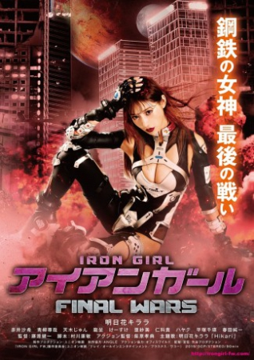

Also known as:アイアンガール Final Wars (original title)
Country:Japan, 85 minutes
Spoken languages:Japanese
Genres:Action, Sci-Fi
Director(s):Ken'ichi Fujiwara
Writer(s):Yasutoshi Murakawa
Video Codec:Unknown
Number: 2620


Certification:
Storyline:
In 20XX, Japan is full of Cyborgs. Human developed Artificial Intelligence JUDA to protect the Earth. However, JUDA started to attack humans since humans were planning a nuclear war and they are the real enemy of Earth. The fight between Human and Cyborgs flattened Japan. A military company started developing a secret weapon. Before its completion, the weapon was stolen. If the weapon is completed, there would be a final war. Vigilante “Resistance” sensed the danger and stood up. Meanwhile, people were turned into a Murder Weapon after their death. Those cyborgs include Chris had lost their memories. One day Chris has a fateful meeting with a mysterious girl Sara. However the mysterious girl Sara was the final weapon SARA.
Cast:
Medium: Bluray,
Loaned: No
Aspect ratio: Unknown